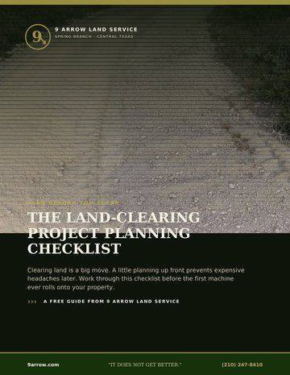

Forestry Mulching in Texas: What It Is & Why It Beats Traditional Clearing
Forestry mulching has quietly become the go-to method for clearing land across the Texas Hill Country. Here's what it is, why landowners love it, and when it's the right call.
What is forestry mulching?
Forestry mulching uses a single purpose-built machine to grind trees, brush, and undergrowth into mulch right where they stand. Instead of cutting, piling, hauling, and burning, one operator clears the area in a single pass and leaves a layer of mulch that protects the soil.
Why Texas landowners choose it
- No burn piles and no hauling — less cost, less risk, no burn-ban delays
- Returns organic material to the soil and helps prevent erosion
- Leaves a clean, drivable finish instead of stumps and debris
- Selective — keep the trees you want, clear the brush you don't
- Works on everything from light regrowth to dense cedar and mesquite
When mulching is the right method
Mulching shines for clearing cedar and mesquite, opening up overgrown pasture, establishing trails and sight lines, and prepping land for development or survey work. When full removal is required — like under a future foundation — root balls can be removed with dozers or excavators and mulched on site. Curious what it costs? See our Texas land clearing pricing guide.
The “9 Arrow finish” means small material — what we call toothpicks or hamster chips — that's easy to drive over and lets grass regrow faster.
Want this done on your place? Explore forestry mulching & land clearing or request an estimate.

The Land-Clearing Project Planning Checklist
The full pre-project checklist — goals, the 811 utility locate, drainage, permits, debris, and how to vet your crew.
Get the free guide (PDF)Instant PDF · sent to your inboxIt does not get better.
Ready to clear your Texas property?
Tell us about your land — you'll know the cost before we start.
Request an Estimate